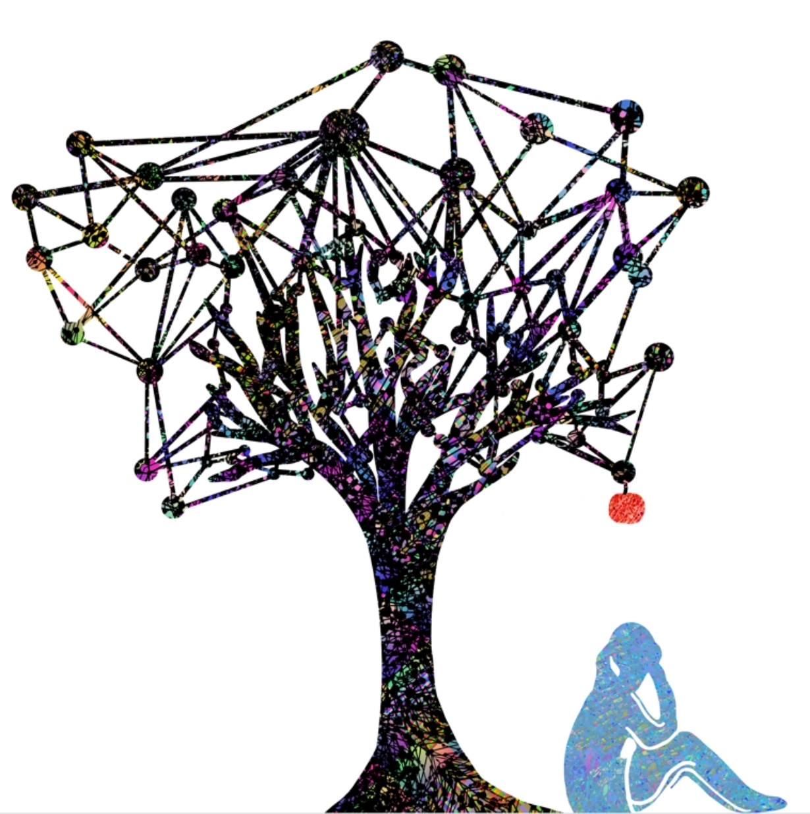
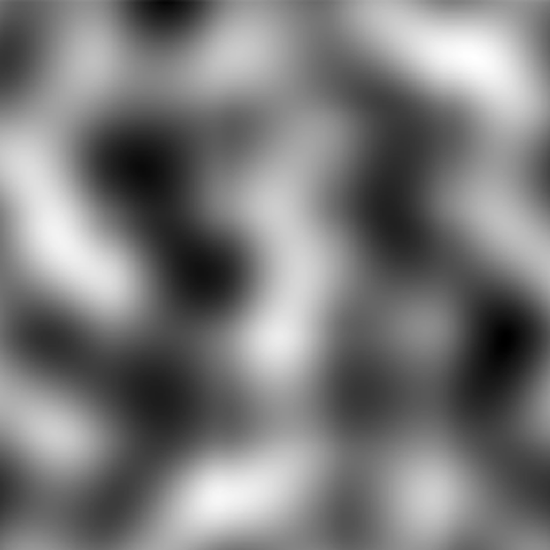

Projects
Social network processes in collaborative decision-making

Teams and collaborations are increasingly important as a means of harnessing diverse and complementary skills. This project studies how team can be organized efficiently and how emergent properties and processes within a team affect team performance. This project makes important contributions to our fundamental understanding of collaborative decision-making and the organization of work in general.
Understanding online creative collaboration over multidimensional networks
 The massive amounts of available digital trace data enable studies of population-level human interaction on an unprecedented scale. This project offers groundbreaking insights into how multidimensional network configurations shape the success of value-creation processes within crowdsourcing systems and online communities. Furthermore, this project offers new computational social science approaches to theorizing and researching the roles of social structure and influence within technology-mediated value creation processes.
The massive amounts of available digital trace data enable studies of population-level human interaction on an unprecedented scale. This project offers groundbreaking insights into how multidimensional network configurations shape the success of value-creation processes within crowdsourcing systems and online communities. Furthermore, this project offers new computational social science approaches to theorizing and researching the roles of social structure and influence within technology-mediated value creation processes.
Human Search Processes in Complex Problem Solving

This work is focused on understanding problem solving behavior as a search process in which humans actively seek out information that maximizes the evidence for their model of the problem at hand. That is, by running human experiments as well as agent-based simulations, we are trying to understand how people represent complex problems and use that representation in order to find the best solution to a problem. Throughout this work, we model optimal decision-making as a process of minimizing the surprises that would be generated by our actions, and in doing so, we are able to understand search behavior in a way resolves traditional dilemmas in behavioral economics about whether people tend to exploit known solutions to problems or explore for new ones.
Optimizing Experimental Design
 In this work, we ask a number of questions about how to optimally design experiments—in particular, rapidly-deployed experiments run on online experimentation platforms like VolunteerScience (Radford, Pilny, Reichelman, Keegan, Hoye, & Lazer, 2016) and nodeGame (Balietti, 2016). For one project, we’ve designed an optimal experimental design protocol that can rapidly search a vast space of possible experiments to find the design that will maximize the /information gained/ from running the experiment. We use a similar approach in another project studying social networks and decision-making, where we optimize for the particular /network structure/ that would produce the greatest effect size in our experiment.
In this work, we ask a number of questions about how to optimally design experiments—in particular, rapidly-deployed experiments run on online experimentation platforms like VolunteerScience (Radford, Pilny, Reichelman, Keegan, Hoye, & Lazer, 2016) and nodeGame (Balietti, 2016). For one project, we’ve designed an optimal experimental design protocol that can rapidly search a vast space of possible experiments to find the design that will maximize the /information gained/ from running the experiment. We use a similar approach in another project studying social networks and decision-making, where we optimize for the particular /network structure/ that would produce the greatest effect size in our experiment.